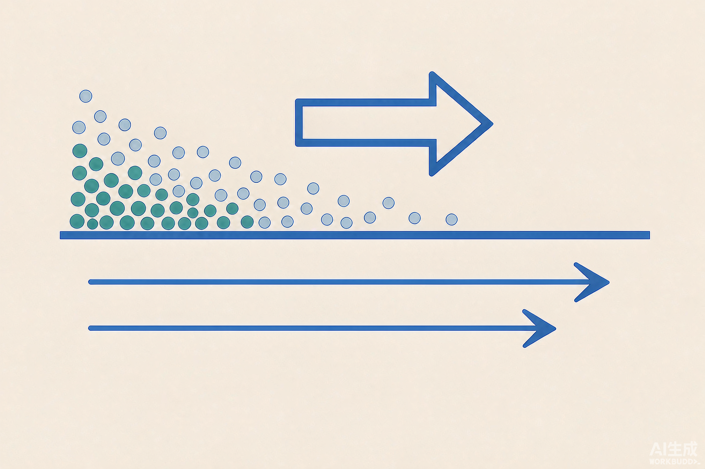
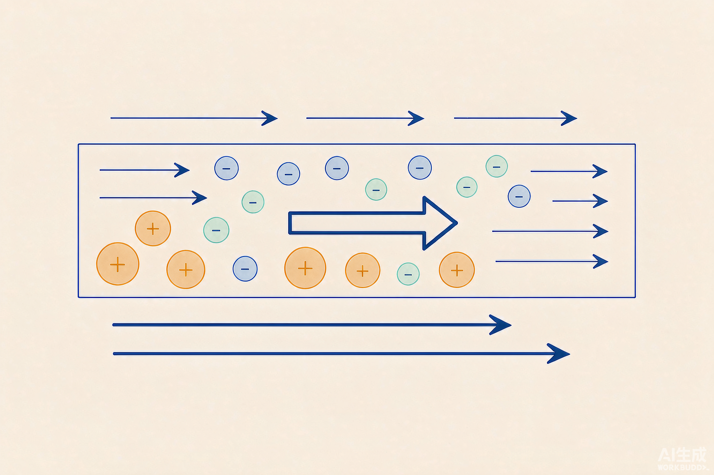
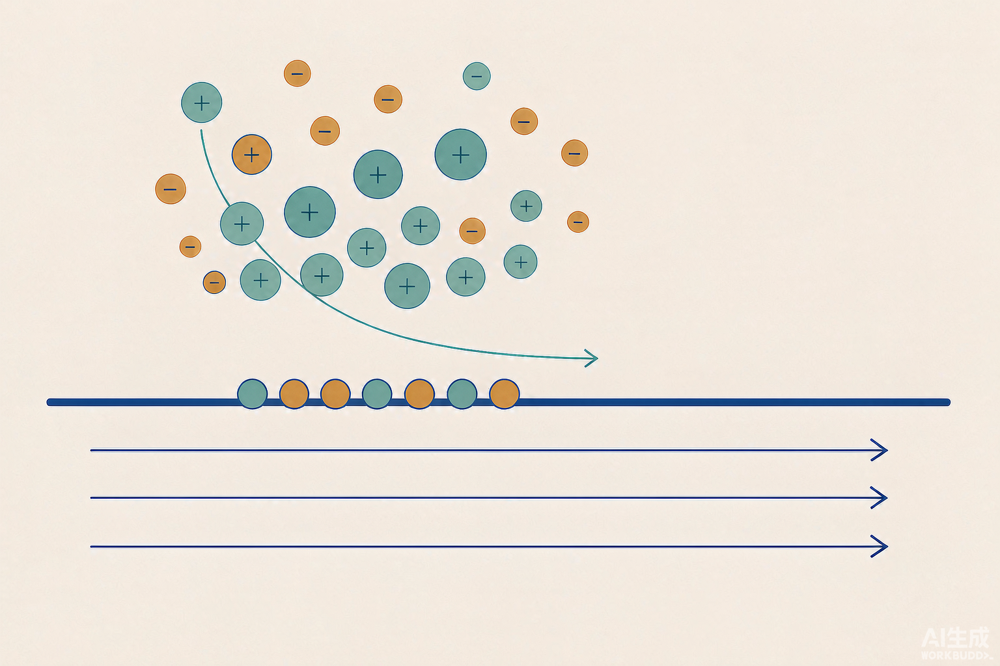
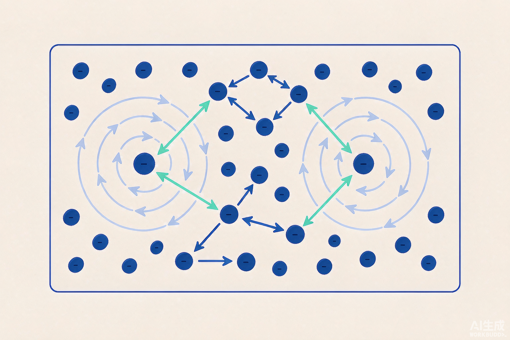

黄云帆Yunfan Huang
博士 · 工程力学系 · 清华大学
Mechanics
Condensed Matter Physics
Computational Physics
Mechanical Engineering
Chemical Engineering
微纳尺度上跨学科的多物理水动力学输运

物理化学流体力学
∩

电耦合流体力学

电解质溶液界面的电动现象

二维纯导体中的电子流体力学
PCH
微纳尺度的物理化学流体力学（如电动输运）
QH
固体体系的量子流体力学（如电子、声子）
AM
多相固体介质中的原子输运（如电迁移、热迁移）
CF
多孔介质中的复杂流动（如颗粒、乳液）
MS
多物理水动力学输运的建模与模拟（动理学与多尺度视角）
代表论文
- Applied Physics Reviews, 12: 031322, 2025
- Advances in Colloid and Interface Science, 342: 103518, 2025
- Physical Review Fluids, 9: 103701, 2024
- Physical Review B, 104: 155408, 2021
- Journal of Fluid Mechanics, 1024: A8, 2025